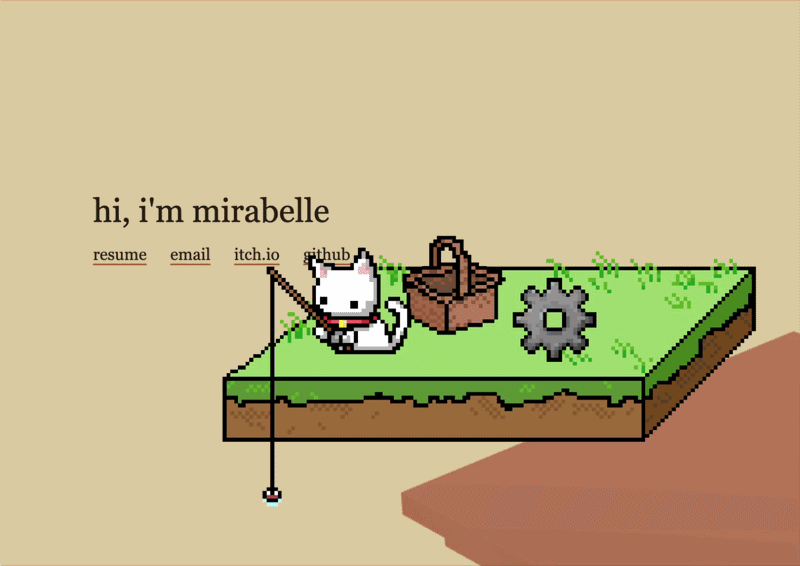

> built a full software rasterization pipeline in c++: scene-graph transforms, diamond-exit line drawing, and bounding-box triangle coverage with top-left tie-breaking, plus depth testing and alpha blending
> implemented perspective-correct barycentric interpolation with uv derivatives, trilinear mip-mapping (generation, sampling, and lod selection), and configurable supersampling with a custom sample pattern
> implementing geometry and mesh operations: adding, deleting, and transforming vertices, edges, and faces
file fisher
unity · c# · pixel art

> published a 2d pixel-art desktop idler in which a cat pulls random files out of the user's downloads folder on a user-set interval, as passive file management for people who find organizing files daunting
> built the basket ui (open, remove, or send a caught file to the trash) and a settings panel controlling fishing frequency; shipped a macos build to itch.io
> solo project: wrote all c# game logic and drew all pixel art assets
> built a hand-tracked interactive installation: a clenched fist spawns a fish into a 3d bowl, and an extended index finger drives a directional "wind" force that pushes fish through the water and can launch them out of the bowl
> authored the full node network, including the 3d scene, models, forces, and gravity restore behavior, on top of the mediapipe hand-landmark library
> lead two weekly recitations and hold office hours for a course serving 1000+ students annually, teaching c programming, data structures, algorithms, and systems concepts
> serve as grading group lead, coordinating tas during staff grading sessions; study rubrics in advance, resolve grading questions, and calibrate scoring to the concepts assessed
> grade exams and assignments, debug student c code during office hours, and playtest quizzes and homeworks to identify correctness and clarity issues before release
software developer, scottylabs
carnegie mellon · aug 2025 – may 2026
> built modular, reusable react and tailwind css components for a campus social app prototype, supporting rapid feature iteration across the team
> implemented responsive ui from figma files in collaboration with the design team
education
carnegie mellon university
b.s. computer science and arts · 2025 – 2029
coursework: 15-362 computer graphics, 15-210 parallel & sequential data structures and algorithms, 15-251 great theoretical ideas in cs, 15-150 functional programming, 15-122 imperative computation, 21-241 matrices & linear transformations, 60-120 introduction to digital media, 60-212 creative coding / interactivity and computation